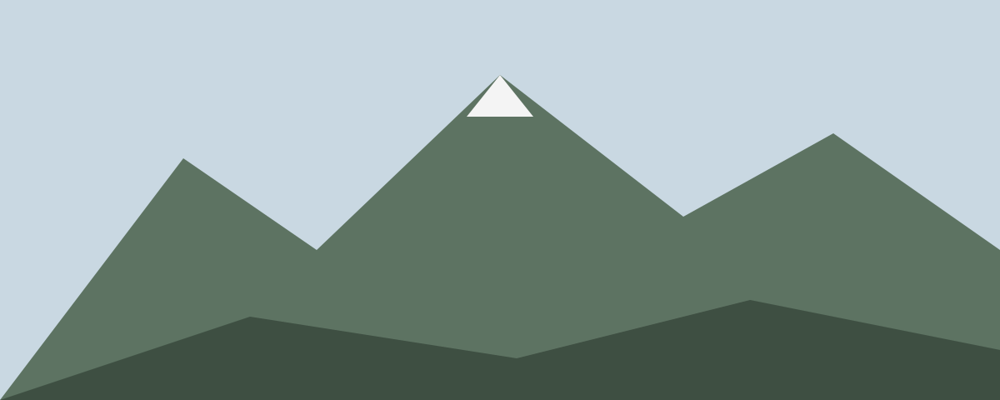
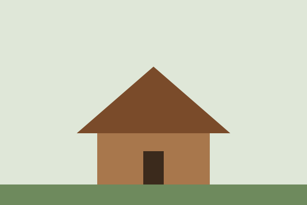
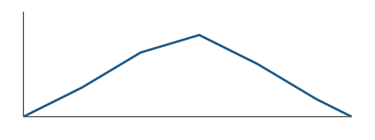

Crossing the Tatras in October

We started from Štrbské Pleso at seven, with headlamps still on. The plan was three days hut to hut, west to east, before the huts close for the winter season.
Day one: up to the ridge
The first climb is steep and short. By ten we were on the ridge with the whole valley below us and a wind that made lunch a quick affair.
Pack for winter even when the forecast says autumn. Above 2,000 metres the forecast is a suggestion.

Day two: five lakes
The second day drops into a valley of five glacial lakes. The path is easy and the views are the best of the trip.

Day three: down to Tatranská Lomnica
A long descent through forest. Our knees complained; our coffee at the bottom did not.
What we packed
- Shell jacket and a warm mid layer
- Microspikes, which we used twice
- Two litres of water each; the huts sell more